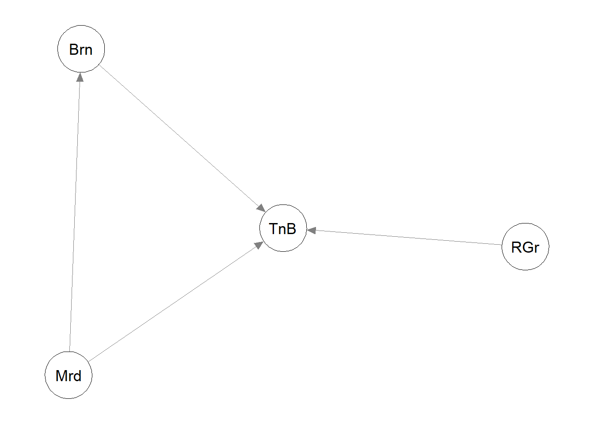
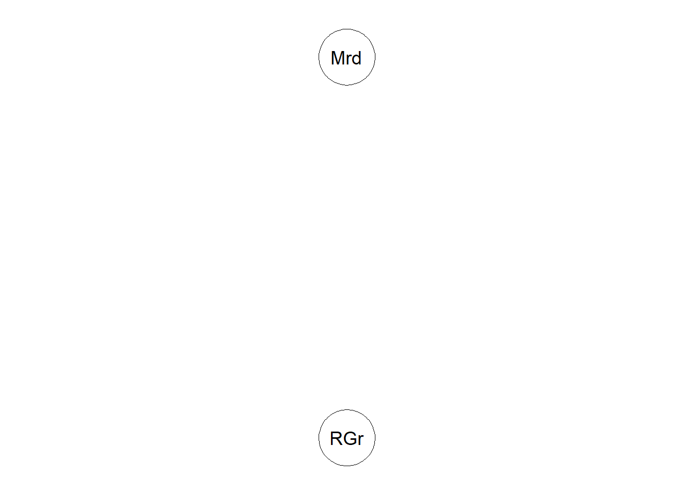
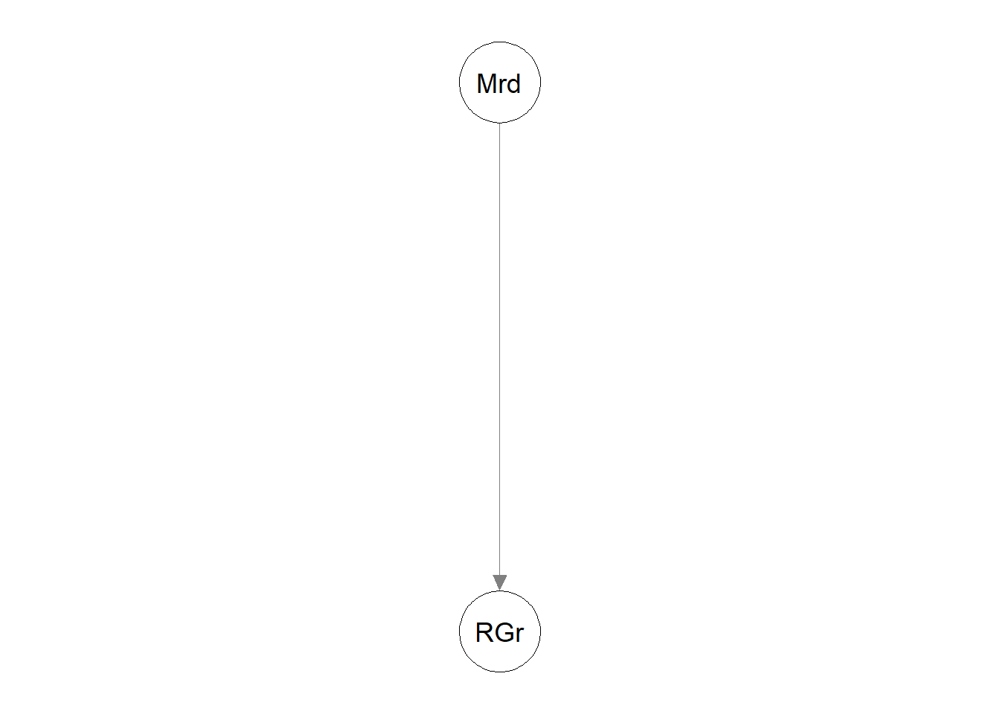

Mi pasión siempre han sido los deportes. He practicado muchos como: natación, baloncesto, tenis o fútbol sala. Este año, quiero volver a jugar al tenis y me encuentro emocionada. El problema es que tengo muchas opciones de clubes de tenis donde apuntarme y no sé qué hacer.
Para mí, el deporte es algo esencial en mi vida y, aunque no me quiero dedicar de forma profesional, me gusta mucho que los entrenamientos sean muy intensos y lo más profesionales posibles. Sin embargo, creo que el ambiente debe ser divertido y relajado. Tan importante es hacer deporte serio como disfrutarlo y pasarlo bien.
Por otro lado, durante el día estoy muy ajetreada, por lo que es importante no perder tiempo en el desplazamiento. Lo ideal sería que el club estuviera cerca de casa o, por lo menos, que tuviera fácil aparcamiento.
En cuanto a lo económico, para mí no es tan importante. Los precios son todos parecidos, aunque sí es verdad que algunos incluyen más servicios que otros. De hecho, es importante destacar que no todos los clubes tienen las mismas instalaciones. A mi me encanta alquilar pistas con mi hermano y amigos para jugar. Y no todos los clubes tienen las mismas facilidades.
Veamos ahora las diferentes alternativas y una breve presentación de ellas:
Club Mirador: Club muy cercano a mi casa (5 mins andando). Es un club social y pequeño, pero muy familiar. Cuenta con una escuela de tenis que lleva este deporte también en otros clubes. Todos los monitores son profesionales y muy cercanos. El problema es que cuenta solo con una pista de tenis, por lo que, por un lado, las clases de tenis tienen un alto número de alumnos y, por otro, es dicícil reservarla, pues siempre está ocupada. Esta escuela de tenis se preocupa mucho por hacer eventos y torneos. Siempre con el objetivo de pasarlo bien. Es perfecta para tener el tenis como ocio. Es bastante económica.
Club Bernier: aunque también es un club social, su objetivo principal es el tenis. Bastante profesional, pero sin perder de vista el ocio y el disfrute. Está también muy cerca de casa (10 mins andando). Cuenta con 4 pistas de tenis, gimnasio, pistas de padel y bar/restaurante. También realizan muchos partidos y torneos en los que te puedes poner a prueba como tenista. No es tan económico.
Club de tenis Río Grande: club dedicado al tenis. Este club se dedica al tenis, aunque cuenta también con otros muchos servicios como piscina, sala fitness, pistas de padel o campos de fútbol. Es un club muy grande, con 16 pistas de tenis, de las cuales 12 son de tierra batida y en muy buen estado. Hay grupos de entrenamientos en función de tus objetivos: ocio, entrenamiento intenso, mejorar la técnica… Se encuentra a 5 mins en coche de mi casa y tiene parking. Hay buen ambiente, pero al ser tran grande, se pierde un poco la familiaridad. Es más caro.
Real Club de Tenis Betis: club histórico de tenis en Sevilla. Reconocido a nivel nacional. Ideal si quieres mejorar y entrenar de forma intensa. Realiza grandes torneos y está hermanado con otros clubes de tenis de España. Cuenta con 6 pistas de tenis de tierra batida, gimansio, pistas de padel y piscina. Se sitúa en Sevilla, por lo que está a 15 minutos en coche, más el tiempo de aparcamiento. Es caro.
2 SOLUCIÓN PROBLEMA.
En primer lugar, vamos a presentar los criterios y subcriterios tenidos en cuenta:
Ambiente: la buena relación entre alumnos y monitores es esencial. Este criterio, los vamos a dividir en dos subcriterios: familiaridad y eventos deportivos. Familiaridad: se agradece el buen rollo y las ganas de disfrutar el deporte. Tanto entre los alumnos como con los monitores. Eventos deportivos: súper importante para crear vínculos con otros jugadores y para crear un ambiente deportivo y de competición.
Servicios: este criterio también lo vamos a dividir en dos subcriterios: pistas de tenis e instalaciones. En primer lugar, pistas de tenis: lo ideal es que haya varias pistas de tenis, para poder alquilarlas y que estén en buen estado. Instalaciones: siempre es mejor que el club posea otras istalaciones como gimnasio, pistas de padel o bar, para que se convierta en un club donde disfrutar, además de hacer deporte.
Ubicación y accesibilidad: debido a la falta de tiempo, lo ideal es que el club esté cerca de casa o, por lo menos, que sea fácil de aparcar con el coche.
Precio: debido a que no quiero dedicarme profesionalmente, los precios deben ser asequibles.
Entrenamientos: aunque mi principal objetivo sea divertirme mientras hago deporte, para mí es esencial que los entrenamientos sean intensos y competitivos.
Una vez presentados el problema, los criterios y las alternativas, procedemos a aplicar las diferentes técnicas de decisión multicriterio.
2.1 Resolución con AHP con R.
Con toda la información anterior, voy a contruir las tablas de comparación 2 a 2. Y calculamos los pesos locales:
source("teoriadecision_funciones_multicriterio_utiles.R")n.criterios =c("Ambiente","Servicios","Ubicación y accesibilidad","Precio","Entrenamientos")tab1 =multicriterio.crea.matrizvaloraciones_mej(c(2,1/3,5,3,1/4,3,1/2,6,2,1/7),5,n.criterios)tab1
Mirador Bernier Río Grande Tenis Betis
0.0482 0.1182 0.2500 0.5836
Una vez calculados los pesos locales, pasamos a los pesos globales. Al ser un problema multinivel, los vamos a calcular a mano. Aunque podamos sacar todas las conclusiones con estos resultados, voy a terminar de explicarlas con la librería AHP, pues todas las tablas se aprecian mucho mejor y tenemos las mismas soluciones pero de forma más visual.
CONCLUSIONES: Viendo los resultados, elegiríamos el club Mirador, con un 34,54%, seguido del club Bernier con un 22.73%. Las interpretaciones de por qué han salido estos resultados, la vamos a ver mejor con la librería AHP como he comentado anteriormente.
Veámos ahora la inconsistencia de cada una de las tablas:
Podemos comprobar que todas las matrices tienen consistencia aceptable. Por lo que las valoraciones que hemos puesto tienen sentido. No hay errores de inconsistencia y en las tablas no se forman ciclos entre preferencias de las alternativas y criterios.
2.2 Resolución con AHP con librería AHP.
Ahora vamos a hacer lo mismo, pero con la ayuda de la libreria AHP. Para ello, he plasmado toda la información en el fichero esquema.ahp. Deben salir las mismas conclusiones, pero vamos a comentarlas en esta sección, pues la salida es mucho más visual e intuitiva.
#MEJOR DECISIÓN: ALTERNATIVA B (peso global del 53.1%)#pesos locales:t2 =AnalyzeTable(datos, variable ="priority")export_formattable(t2, file ="tablaahpLocal.png")
formattable::as.htmlwidget(t1)
formattable::as.htmlwidget(t2)
CONCLUSIONES:
Viendo las tablas podemos sacar muchas conclusiones, por ejemplo:
Elegimos la opción club Mirador, pues es el que tiene mejor puntuación: 34.5%.
Lo que más le puntúa para ser elegido es la ubicación y accesibilidad. Se le ha dado mucha importancia a que el club de tenis esté cerca de casa y, el club Mirador es el mejor en este aspecto. Además, al ser un club pequeño, hay mucha familiaridad y un muy buen ambiente, por lo que esto le suma mucho también. Teniendo en cuenta que son los dos criterios con más peso, esta alternativa sale ganadora.
Del mismo modo se puede pensar con el club Bernier. Se caracteriza por la ubicación y el ambiente. Aún así, al tener peores valoraciones que el club Mirador, se queda en segunda posición.
Por otro lado, el club Río Grande. El mejor en cuanto a los servicios debido al gran número de pistas de tenis que posee. Sin embargo, este no es el criterio con más peso y en los demás no es el mejor. Por eso termina en tercera posición.
Por último, el club Tenis Betis. La ubicación y accesibilidad es lo que más le penaliza, pues tiene muy mala valoración y es el criterio con más peso. Es el mejor en los entrenamientos, pues es un club bastante serio, pero no es suficiente para ser elegido.
La diferencia de pesos en los criterios hace realmente que nos decantemos por una u otra alternativa.
Se puede comprobar que todas las comparaciones tienen una inconsistencia de menos de un 10%, por lo que hemos valorado con buen criterio y sin muchas inconsistencias.
2.3 Resolución con Electre.
En primer lugar creamos la matriz de decisión. Para ello, vamos a tratar los subcriterios como criterios y de esta forma veremos más fácil como aplicar este método. Vamos a darle estos valores a cada alternativa en cada criterio:
Familiaridad: como es algo subjetivo, voy a poner un porcentaje en función de mi propio criterio. Este criterio lo querremos maximizar. Para obtener estos valores he mantenido las diferencias dadas en la tabla AHP, pero esta vez de forma porcentual.
Eventos deportivos: una media de cuántos torneos por mes. Lo ideal es tener el máximo número de torneos al mes.
Pistas de tenis: nº de pistas de tenis. Es algo objetivo. Cuantas más pistas de tenis tenga un club, mejor será valorado.
Instalaciones: valoración en porcentaje personal. Viendo las instalaciones que ofrecen cada club en sus páginas webs, les proporciono una nota personal. La valoración será en porcentaje y la querremos maximizar.
Ubicación y accesibilidad: tiempo de trayecto. Como hay clubes que se pueden ir andando y otros que se tiene que ir en coche, voy a poner una penalización al tiempo de ir en coche. Es decir, si es necesario ir en coche, voy a añadirle al tiempo 5 mins más debido al aparcamiento y como penalización en sí de tener que coger un vehículo. El objetivo de este criterio será minimizarlo.
Precio: Cuota mensual (euros). El objetivo es minimizar el gasto mensual.
Entrenamientos: valoración en porcentaje personal. Leyendo las descripciones de los clubes en sus páginas webs y por experiencia personal, voy a decidir una nota de lo que creo que van a ser los entrenamientos. El objetivo va a ser maximizar este criterio, pues lo ideal es que los entrenamientos sean intensos y competitivos.
Los de minimizar, los añadimos directamente con el menos.
Vamos a usar los pesos de los criterios que hemos obtenido con el AHP, para poder compararlos. Además, tiene sentido, pues yo soy la que le doy más importancia a uno o a otro criterio.
Además, voy a usar para el test de discordancia los siguientes valores para las diferencias:
Eventos deportivos: si hay una diferencia de 5 eventos, para mí esa diferencia es demasiada y por lo tanto la voy a tener en cuenta.
Pistas: si hay una diferencia de 10 pistas. Se puede comprobar la diferencia de dos clubes con el número de pistas de tenis que poseen.
Ubicación y accesibilidad: si hay una diferencia de 15 minutos de trayecto. El tiempo es fundamental para mí. Una diferencia de más de 15 minutos supone grandes consecuencias para mi día.
Precio: si hay una diferencia mensual de 50 euros. Para mí el precio no era un criterio muy importante pues más o menos los precios son similares. Sin embargo, una diferencia de 50 euros sí es algo excesivo.
Warning in abbreviate(colnames(input), 3): abreviatura utilizada con caracteres
no ASCII

solElec$nucleo_aprox
Mirador Río Grande
1 3
Viendo este grafo y viendo el núcleo obtenido, vamos a modificar el alpha para que nos quedemos solo con una alternativa. Es decir, ponemos más restrictivo el superar el test de concordancia.Y nos quedamos solo con las alternativas posibles: club Mirador y club Río Grande:
Warning in abbreviate(colnames(input), 3): abreviatura utilizada con caracteres
no ASCII

solElec2$nucleo_aprox
Mirador Río Grande
1 2
Puesto que todavía no hemos llegado a ninguna solución, vamos a modificar también el test de discordancia. Como en realidad no necesito tantas pistas de tenis y, además, siempre tengo la opción de alquilarla en cualquier otro lugar, voy a modificar esa restricción.
Warning in abbreviate(colnames(input), 3): abreviatura utilizada con caracteres
no ASCII

solElec3$nucleo_aprox
Mirador
1
CONCLUSIÓN:
Según el procedimiento de Electre también llegamos a la misma conclusión: quedarnos con la alternativa del club Mirador. Con los datos que le he proporcionado, ha sido complicada la elección entre las alternativas de club Mirador y de club Río Grande. Sin embargo, cambiando un poco las restricciones de los test de concordancia y discordancia en función de nuestro criterio y lógica, hemos podido concluir y tomar una decisión.
Por otro lado, si queremos ver los pasos intermedios y las tablas de concordancia y discordancia, lo detallo a continuación. (Detallo solo con las restricciones finales)
#Electre con todos los pasos:completo =func_ELECTRE_Completo(solElec3)#aqui las tablas de los índices:completo$MIndices$KE
Alts
Inds
A1
A2
A1
I+
1,2,5,6
I=
1,2,3,4,5,6,7
I-
3,4,7
A2
I+
3,4,7
I=
1,2,3,4,5,6,7
I-
1,2,5,6
ELECTRE: Conjunto de Índices
#tabla del test de concordancia:completo$TConcordancia$KE
Alts
Inds
A1
A2
A1
Ijk
1
0.713
IGjk
NaN
2.4843
TC
F
T
A2
Ijk
0.287
1
IGjk
0.4025
NaN
TC
F
F
ELECTRE: Test Concordancia
#tabla de discordancia:completo$TDiscordancia$KE
Alts
Inds
A1
A2
A1
I-
3,4,7
Djk
15(Inf),40(Inf),25(Inf)
TD
<span style=" color: white !important;border-radius: 4px; padding-right: 4px; padding-left: 4px; background-color: blue !important;" >T</span>
<span style=" color: white !important;border-radius: 4px; padding-right: 4px; padding-left: 4px; background-color: blue !important;" >T</span>
A2
I-
1,2,5,6
Djk
50(Inf),2(5),5(15),15(50)
TD
<span style=" color: white !important;border-radius: 4px; padding-right: 4px; padding-left: 4px; background-color: blue !important;" >T</span>
<span style=" color: white !important;border-radius: 4px; padding-right: 4px; padding-left: 4px; background-color: blue !important;" >T</span>
ELECTRE: Test Discordancia: vd=(Inf,5,Inf,Inf,15,50,Inf)
#tabla de superacion de los dos test:completo$TSuperacion$KE
Alts
Inds
A1
A2
A1
TC
<span style=" color: black !important;border-radius: 4px; padding-right: 4px; padding-left: 4px; background-color: white !important;" >F</span>
<span style=" color: white !important;border-radius: 4px; padding-right: 4px; padding-left: 4px; background-color: red !important;" >T</span>
TD
<span style=" color: white !important;border-radius: 4px; padding-right: 4px; padding-left: 4px; background-color: red !important;" >T</span>
<span style=" color: white !important;border-radius: 4px; padding-right: 4px; padding-left: 4px; background-color: red !important;" >T</span>
RSup
<span style=" color: black !important;border-radius: 4px; padding-right: 4px; padding-left: 4px; background-color: white !important;" >F</span>
<span style=" color: white !important;border-radius: 4px; padding-right: 4px; padding-left: 4px; background-color: blue !important;" >T</span>
A2
TC
<span style=" color: black !important;border-radius: 4px; padding-right: 4px; padding-left: 4px; background-color: white !important;" >F</span>
<span style=" color: black !important;border-radius: 4px; padding-right: 4px; padding-left: 4px; background-color: white !important;" >F</span>
TD
<span style=" color: white !important;border-radius: 4px; padding-right: 4px; padding-left: 4px; background-color: red !important;" >T</span>
<span style=" color: white !important;border-radius: 4px; padding-right: 4px; padding-left: 4px; background-color: red !important;" >T</span>
RSup
<span style=" color: black !important;border-radius: 4px; padding-right: 4px; padding-left: 4px; background-color: white !important;" >F</span>
<span style=" color: black !important;border-radius: 4px; padding-right: 4px; padding-left: 4px; background-color: white !important;" >F</span>
ELECTRE: Relación Superación: alpha = 0.55, vd=(Inf,5,Inf,Inf,15,50,Inf)
Con estas tablas podemos comprobar que el par (a1,a3) supera ambos tests (el de concordancia y el de discordancia), pero que el par (a3,a1) no supera el test de concordancia. Por ello, la alternativa 1 (club Mirador) supera a la alternativa 3 (club Río Grande)
2.4 Resolución con Promethee con R.
A continuación voy a resolver el problema con la técnica de Promethee. Para ello, voy usar la misma matriz de decisión, los mismos pesos (para poder comparar y porque realmente muestran mis preferencias). Para las funciones de preferencia, voy a tomar una distinta en cada criterio.